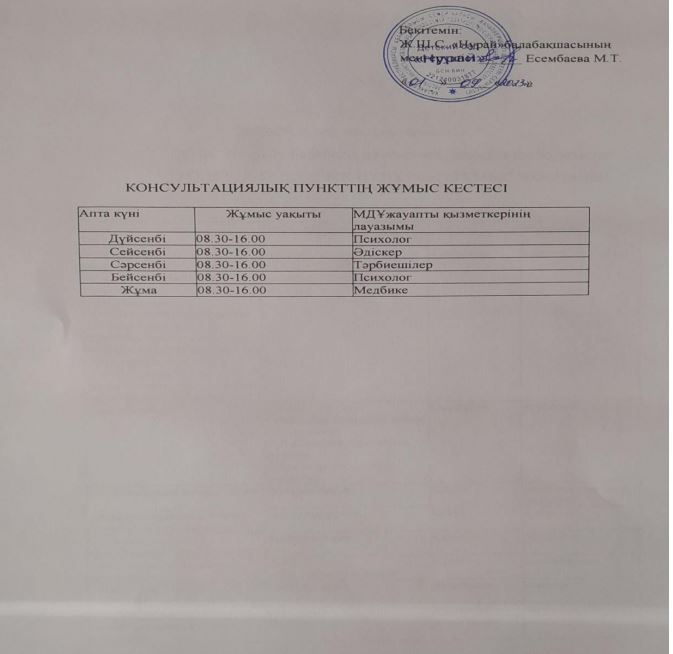

Құрметті ата-аналар! Мектепке дейінгі мекемеге балалары келмейтін ата-аналарға арналған Консультациялық кеңес пункті жұмыс жасайды. Егер сіздің балаңыз балабақшаға келмесе, бірақ сізде баланы тәрбиелеу мен оқытуға , баланы дамытуға , баланың денсаулығын нығайтуға қажетті сұрақтар туындаған жағдайда ,сіз балабақшаның Консультациялық пункітінен кеңестер алуыңызға болады
| Тақырыбы | Өткізу нысаны | Ай | Мамандар |
|---|---|---|---|
| Балабақшаға консультативтік пунктіне баратын отбасылардың тізімін қалыптастыру. Консультациялық пункттің 2023-2024 оқу жылына арналған жылдық жұмыс жоспарын бекіту Баланы балабақшаға бейімдеу, мамандардың жұмыс кестесі, баланың жеке білім беру бағытын анықтау | Консультативтік пунктіне жазылатын атааналардың өтініштер толтыру. | Қыркүйек | әдіскер /психолог |
| «Бұл қызықты» | Танысу әңгімесі Балабақша бойынша шолу экскурсиясы Ата-аналарға сауалнама жүргізу (жеке қажеттіліктерді анықтау) | Қыркүйек | психолог |
| «Балабақшадағы бір күнім» | консультация | Қазан | медбике, әдіскер, психолог |
| «Мектеп жасына дейінгі балалардың тілдік дамуы» | дөңгелек үстел | Қазан | психолог |
| Отбасында ұтымды тамақтануды ұйымдастыру | консультация | Қараша | медбике |
| Дене белсенділігі және денсаулық | Оқыту сабағы,Консультация | Қараша | тәрбиешілер |
| Отбасылық тәрбиенің баланың дамуына әсері | консультация | Желтоқсан | психолог |
| «Тәрбие ойыны» | дискуссия | Желтоқсан | тәрбиешілер |
| «Баланы мадақтау жәнеайыптау» | тренинг | Желтоқсан | психолог |
| «Емдейтін ойындар» | Мастер-класс | Қаңтар | психолог |
| «Баланың денсаулығын нығайту» | Консультация | Қаңтар | Медбике,тәрбиеші |
| МДҰмамандарының жеке жұмысы | Жеке кеңес беру | Қаңтар | психолог медбике, тәрбиеші |
| «Менің досым доп» | Мастер -класс | Ақпан | тәрбиешілер |
| «Бүкіл отбасының денсаулығы үшін» | Семинар –практикум | Наурыз | медбике, тәрбиеші |
| «Виртуалды кеңес беру пункті» | МДҰсайтында (Сұрақжауап) | Наурыз | әдіскер |
| МДҰмамандарының жеке жұмысы | Жеке кеңес беру | Сәуір | психолог,әдіскер, медбике, тәрбиеші |
| «Сурет салуды үйрену» | Мастер -класс | Сәуір | тәрбиеші |
| «Денсаулық басты байлық» | Ішек инфекцияларының алдын алу туралы консультация | Мамыр | медбике |
| «Балаларды мектепкедайындау» | Жеке кеңес беру | Мамыр | Психолог |
| Жұмыстың нәтижелілігі туралы жылдық есеп | сауалнама | Мамыр | Психолог |